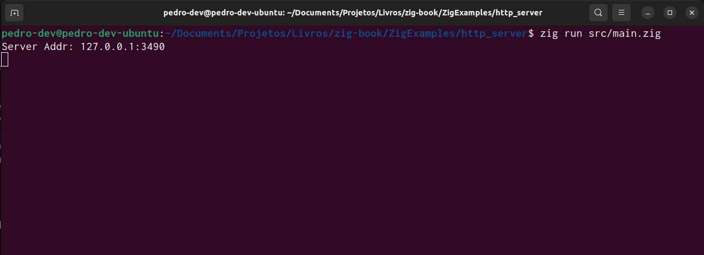
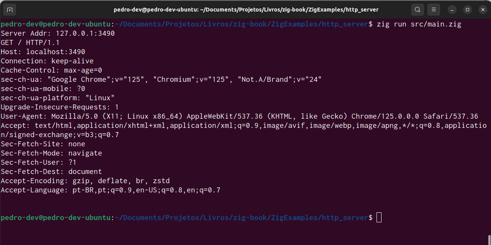

const localhost = [4]u8{
127, 0, 0, 1
};
_ = localhost;7 Project 2 - Building a HTTP Server from scratch
In this chapter, I want to implement a new small project with you. This time, we are going to implement a basic HTTP Server from scratch.
The Zig Standard Library already have a HTTP Server implemented, which is available at std.http.Server. But again, our objective here in this chapter, is to implement it from scratch. So we can’t use this server object available from the Zig Standard Library.
7.1 What is a HTTP Server?
First of all, what is a HTTP Server? A HTTP server, as any other type of server, is essentially a program that runs indefinetly, on a infinite loop, waiting for incoming connections from clients. Once the server receives an incoming connection, it will accept this connection, and it will send messages back-and-forth to the client through this connection.
But the messages that are transmitted inside this connection are in a specific format. They are HTTP messages (i.e. messages that uses the HTTP Protocol specification). The HTTP Protocol is the backbone of the modern web. The world wide web as we know it today, would not exist without the HTTP Protocol.
So, Web servers (which is just a fancy name to HTTP Servers) are servers that exchange HTTP messages with clients. And these HTTP servers and the HTTP Protocol specification are simply essential to the operation of the internet of today.
That is the whole picture of the process. Again, we have two subjects involved here, a server (which is a program that is running indefinetly, waiting for connections), and a client (which is someone that wants to connect to and exchange HTTP messages with the server).
You may find the material about the HTTP Protocol available at the Mozilla MDN Docs1 , a great resource for you to also look at. It gives you a great overview on how HTTP works, and what role the server plays in this matter.
7.2 How a HTTP Server works?
Imagine a HTTP Server as if it were the receptionist of a large hotel. In a hotel, you have a reception, and inside that reception there is a receptionist waiting for customers to arrive. A HTTP Server is essentially a receptionist that is indefinetly waiting for new customers (or, in the context of HTTP, new clients) to arrive in the hotel.
When a customer arrives at the hotel, that customer starts a conversation with the receptionist. He tells the receptionist how many days he wants to stay at the hotel. Then, the receptionist search for an available apartment. If there is an available apartment at the moment, the customer pays the hotel fees, then, he gets the keys to the apartment, and then, he goes to the apartment to rest.
After this entire process of dealing with the customer (searching for available rooms, receiving payment, handing over the keys), the receptionist goes back to what he was doing earlier, which is to wait. Wait for new customers to arrive.
That is, in a nutshell, what a HTTP Server do. It waits for clients to connect to the server. When a client attempts to connect to the server, the server accepts this connection, and it starts to exchange messages with the client through this connection. The first message that happens inside this connection is always a message from the client to the server. This message is called the HTTP Request.
This HTTP Request is a HTTP message that contains what the client wants from the server. Is literally a request. The client that connected to the server is asking this server to do something for him.
There are different “types of request” that any client can do to a HTTP Server. But the most basic type of request, is when a client ask to the HTTP Server to serve (i.e. to send) some specific web page (which is a HTML file) to him. When you type google.com in your web browser, you are essentially sending a HTTP Request to Google’s HTTP servers, which asks these servers to send the Google webpage to you.
Nonetheless, when the server reiceves this first message, the HTTP Request, it analyzes this request, to understand: who the client is? what he wants the server to do? this client provided all the necessary information to perform the action that he asked? Etc.
Once the server understands what the client wants, he simply perform the action that was requested, and, to finish the whole process, the server sends back a HTTP message to the client, informing if the action performed was succesful or not, and, at last, the server ends (or closes) the connection with the client.
This last HTTP message sent from the server to the client, is called the HTTP Response. Because the server is responding to the action that was requested by the client. The main objective of this response message is let the client knows if the action requested was succesful or not, before the server closes the connection.
7.3 How a HTTP server is normally implemented?
Let’s use the C language as an example. There are many materials teaching how to write a simple HTTP server in C code, like Yu (2023), or Weerasiri (2023), or Meehan (2021). Having this in mind, I will not show C code examples here, because you can find them on the internet. But I will describe the theory behind the necessary steps to perform in the C code.
In essence, we normally implement a HTTP server in C using WebSocket technology, which involves the following steps:
- Create a socket object.
- Bind a name (or more specifically, an address) to this socket object.
- Make this socket object to start listening and waiting for incoming connections.
- When a connection arrive, we accept this connection, and we exchange the HTTP messages (HTTP Request and HTTP Response).
- Then, we simply close this connection.
A socket object (which uses the WebSocket technology) is essentially a channel of communication. You are creating a channel where people can send messages to. When you create a socket object, this object is not binded to any particular address. This means that with this object you have a representation of a channel of communication in your hands. But this channel is not currently available, or, it is not currently accessible, because it do not have a known address where you can find it.
That is what the “bind” operation do. It binds a name (or more specifically, an address) to this socket object, or, this channel of communication, so that it becomes available, or, accessible through this address. While the “listen” operation makes the socket object to listen for incoming connections in this address. In other words, the “listen” operation makes the socket to wait for incoming connections.
Now, when a client actually attempts to connect to the server through the address we specify, then, the socket object needs to accept this incoming connection. When we accept it, then, the connection is established, client and server are now connected to each other, and they can read or write messages in this established connection.
After we received the HTTP Request from the client, and sent the HTTP Response to the client, we can now close the connection, and end this communication.
7.4 Implementing the server - Part 1
7.4.1 Creating the socket object
Let’s begin with creating the socket for our server. Just to make things shorter, I will create this socket object in a separate Zig module. I will name it config.zig.
In Zig, we can create a web socket using the std.posix.socket() function, from the Zig Standard Library. As I meantioned earlier at Section 7.3, every socket object we create represents a communication channel, and we need to bind this channel to a specific address. An “address” is defined as an IP address, or, more specifically, an IPv4 address2. Every IPv4 address is composed by two components. The first component is the host, which is a sequence of 4 numbers separated by dot characters (.) that identifies the machine used. While the second component is a port number, which identifies the specific door, or, the specific port to use in the host.
The sequence of 4 numbers (i.e. the host) identifies the machine (i.e. the computer itselft) where this socket will live in. Every computer normally have multiple “doors” available inside him, because this allows the computer to receive multiple connections at the same time. He simply use a single door for each connection. So the port number, is essentially a number that identifies the specific door in the computer that will be resposible for receiving the connection. That is, it identifies the “door” in the computer that the socket will use to receive incoming connections.
To make things simpler, I will use an IP address that identifies our current machine in this example. This means that, our socket object will reside on the same computer that we are currently using (this is also known as the “localhost”) to write this Zig source code.
By convention, the IP address that identifies the “locahost”, which is the current machine we are using, is the IP 127.0.0.1. So, that is the IP address we are going to use in our server. I can declare it in Zig by using an array of 4 integers, like this:
Now, we need to decide which port number to use. By convention, there are some port numbers that are reserved, meaning that, we cannot use them for our own purposes, like the port 22 (which is normally used for SSH connections). For TCP connections, which is our case here, a port number is a 16-bit unsigned integer (type u16 in Zig), thus ranging from 0 to 65535 (Wikipedia 2024). So, we can choose a number from 0 to 65535 for our port number. In the example of this book, I will use the port number 3490 (just a random number).
Now that we have these two informations at hand, I can finally create our socket object, using the std.posix.socket() function. First, we use the host and the port number to create an Address object, with the std.net.Address.initIp4() function, like in the example below. After that, I use this address object inside the socket() function to create our socket object.
The Socket struct defined below summarizes all the logic behind this this process. In this struct, we have two data members, which are: 1) the address object; 2) and a stream object, which is the object we will use to read and write the messages into any connection we establish.
Notice that, inside the constructor method of this struct, when we create the socket object, we are using the IPROTO.TCP property as an input to tell the function to create a socket for TCP connections.
const std = @import("std");
const builtin = @import("builtin");
const net = @import("std").net;
pub const Socket = struct {
_address: std.net.Address,
_stream: std.net.Stream,
pub fn init() !Socket {
const host = [4]u8{ 127, 0, 0, 1 };
const port = 3490;
const addr = net.Address.initIp4(host, port);
const socket = try std.posix.socket(
addr.any.family,
std.posix.SOCK.STREAM,
std.posix.IPPROTO.TCP
);
const stream = net.Stream{ .handle = socket };
return Socket{ ._address = addr, ._stream = stream };
}
};7.4.2 Listening and receiving connections
Remember that we stored the Socket struct declaration that we built at Section 7.4.1 inside a Zig module named config.zig. This is why I imported this module into our main module (main.zig) in the example below, as the SocketConf object, to access the Socket struct.
Once we created our socket object, we can focus now on making this socket object to listen and receive new incoming connections. We do that, by calling the listen() method from the Address object that is contained in the socket object, and then, we call the accept() method over the result.
The listen() method from the Address object produces a server object, which is an object that will stay open and running indefinitely, waiting to receive an incoming connection. Therefore, if you try to run the code example below, by calling the run command from the zig compiler, you will notice that the programs keeps running indefinitely, without a clear end.
This happens, because the program is waiting for something to happen. It is waiting for someone to try to connect to the address (http://127.0.0.1:3490) where the server is running and listening for incoming connections. This is what the listen() method do, it makes the socket to be active waiting for someone to connect.
On the other side, the accept() method is the function that establish the connection when someone try to connect to the socket. This means that, the accept() method returns a new connection object as a result. And you can use this connection object to read or write messages from or to the client. For now, we are not doing anything with this connection object. But we are going to use it on the next section.
const std = @import("std");
const SocketConf = @import("config.zig");
const stdout = std.io.getStdOut().writer();
pub fn main() !void {
const socket = try SocketConf.Socket.init();
try stdout.print("Server Addr: {any}\n", .{socket._address});
var server = try socket._address.listen(.{});
const connection = try server.accept();
_ = connection;
}This code example allows one single connection. In other words, the server will wait for one incoming connection, and as soon as the server is done with the first connection that it establishs, the program ends, and the server stops.
This is not the norm on the real world. Most people that write a HTTP server like this, usually put the accept() method inside a while (infinite) loop, where if a connection is created with accept(), a new thread of execution is created to deal with this new connection and the client. That is, real-world examples of HTTP Servers normally rely on parallel computing to work.
With this design, the server simply accepts the connection, and the whole process of dealing with the client, and receiving the HTTP Request, and sending the HTTP Response, all of this is done in the background, on a separate execution thread.
So, as soon as the server accepts the connection, and creates the separate thread, the server goes back to what he was doing, which is to wait indefinitely for a new connection to accept. Having this in mind, the code example exposed above, is a server that serves only a single client. Because the program terminates as soon as the connection is accepted.
7.4.3 Reading the message from the client
Now that we have a connection established, i.e. the connection object that we created through the accept() function, we can now use this connection object to read any messages that the client send to our server. But we can also use it to send messages back to the client.
The basic idea is, if we write any data into this connection object, then, we are sending data to the client, and if we read the data present in this connection object, then, we are reading any data that the client sent to us, through this connection object. So, just have this logic in mind. “Read” is for reading messages from the client, and “write” is to send a message to the client.
Remember from Section 7.2 that, the first thing that we need to do is to read the HTTP Request sent by the client to our server. Because it is the first message that happens inside the established connection, and, as a consequence, it is the first thing that we need to deal with.
That is why, I’m going to create a new Zig module in this small project, named request.zig to keep all functions related to the HTTP Request together. Then, I will create a new function named read_request() that will use our connection object to read the message sent by the client, which is the HTTP Request.
const std = @import("std");
const Connection = std.net.Server.Connection;
pub fn read_request(conn: Connection,
buffer: []u8) !void {
const reader = conn.stream.reader();
_ = try reader.read(buffer);
}This function accepts a slice object which behaves as a buffer. The read_request() function reads the contents of the message sent into the connection object, and saves this content into this buffer object that we provided as input.
Notice that I’m using the connection object that we created to read the message from the client. I first access the reader object that lives inside the connection object. Then, I call the read() method of this reader object to effectivelly read and save the data sent by the client into the buffer object that we created earlier. I’m discarting the return value of the read() method, by assigning it to the underscore character (_), because this return value is not useful for us right now.
7.5 Looking at the current state of the program
I think it is a good time to see how our program is currently working. Shall we? So, the first thing I will do is to update the main.zig module in our small Zig project, so that the main() function call this new read_request() function that we just created. I will also add a print statement at the end of the main() function, just so that you can see what the HTTP Request we just loaded into the buffer object looks like.
Also, I’m creating the buffer object in the main() function, which will be responsible for storing the message sent by the client, and, I’m also using a for loop to initialize all fields of this buffer object to the number zero. This is important to make sure that we don’t have uninitialized memory in this object. Because uninitialized memory may cause undefined behaviour in our program.
Since the read_request() receives as input the buffer object as a slice object ([]u8), I am using the syntax array[0..array.len] to get access to a slice of this buffer object, and provide it as input to the function.
const std = @import("std");
const SocketConf = @import("config.zig");
const Request = @import("request.zig");
const stdout = std.io.getStdOut().writer();
pub fn main() !void {
const socket = try SocketConf.Socket.init();
try stdout.print("Server Addr: {any}\n", .{socket._address});
var server = try socket._address.listen(.{});
const connection = try server.accept();
var buffer: [1000]u8 = undefined;
for (0..buffer.len) |i| {
buffer[i] = 0;
}
_ = try Request.read_request(
connection, buffer[0..buffer.len]
);
try stdout.print("{s}\n", .{buffer});
}Now, I’m going to execute this program, with the run command from the zig compiler. But remember, as we sad earlier, as soon as I execute this program, it will hang indefinitely, because the program is waiting for a client trying to connect to the server.
More specifically, the program will pause at the line with the accept() call. As soon as a client try to connect to the server, then, the execution will “unpause”, and the accept() function will finally be executed to create the connection object we need, and the remaining of the program will run.
You can see that at Figure 7.1. The message Server Addr: 127.0.0.1:3490 is printed to the console, and the program is now waiting for an incoming connection.

Well, we can finally try to connect to this server, and there are several ways we can do this. For example, we could use the following Python script:
import requests
requests.get("http://127.0.0.1:3490")Or, we could also open any web browser of our preference, and type the URL localhost:3490. OBS: localhost is the same thing as the IP 127.0.0.1. When you press enter, and your web browser go to this address, first, the browser will probably print a message saying that “this page isn’t working”, and, then, it will probably change to a new message saying that “the site can’t be reached”.
You get these “error messages” in the web browser, because it got no response back from the server. In other words, when the web browser connected to our server, it did send the HTTP Request through the established connection. Then, the web browser was expecting to receive a HTTP Response back, but it got no response from the server (we didn’t implemented the HTTP Response logic yet).
But that is okay. We achieved the result that we wanted for now, which is to connect to the server, and see the HTTP Request that was sent by the web browser (or by the Python script) to the server.
If you comeback to the console that you left open when you executed the program, you will see that the program finished it’s execution, and, a new message is printed in the console, which is the actual HTTP Request message that was sent by the web browser to the server. You can see this message at Figure 7.2.

7.6 Learning about Enums in Zig
Enums structures are available in Zig through the enum keyword. An enum (short for “enumeration”) is a special structure that represents a group of constant values. So, if you have a variable which can assume a short and known set of values, you might want to associate this variable to an enum structure, to make sure that this variable only assumes a value from this set.
A classic example for enums are primary colors. If for some reason, your program needs to represent one of the primary colors, you can create a enum that represents one of these colors. In the example below, we are creating the enum PrimaryColorRGB, which represents a primary color from the RGB color system. By using this enum, I am garanteed that the acolor object for example, will contain one of these three values: RED, GREEN or BLUE.
const PrimaryColorRGB = enum {
RED, GREEN, BLUE
};
const acolor = PrimaryColorRGB.RED;
_ = acolor;If for some reason, my code tries to save in acolor, a value that is not in this set, I will get an error message warning me that a value such as “MAGENTA” do not exist inside the PrimaryColorRGB enum. Then I can easily fix my mistake.
const acolor = PrimaryColorRGB.MAGENTA;e1.zig:5:36: error: enum 'PrimaryColorRGB' has
no member named 'MAGENTA':
const acolor = PrimaryColorRGB.MAGENTA;
^~~~~~~Behind the hood, enums in Zig work the same way that enums work in C. Each enum value is essentially represented as a integer. The first value in the set is represented as zero, then, the second value is one, … etc.
One thing that we are going to learn on the next section is that enums can have methods in them. Wait… What? This is amazing! Yes, enums in Zig are similar to structs, and they can have private and public methods inside them.
7.7 Implementing the server - Part 2
Now, on this section, I want to focus on parsing the HTTP Request we received from the client. However, to effectively parse a HTTP Request message, we first need to understand it’s structure. In summary, a HTTP Request is a text message that is divided into 3 different sections (or parts):
- The top-level header indicating the method of the HTTP Request, the URI, and the HTTP version used in the message.
- A list of HTTP Headers.
- The body of the HTTP Request.
7.7.1 The top-level header
The first line of text in a HTTP Request always come with the three most essential information about the request being analyzed. These three key attributes of the HTTP Request are separated by a simple space in this first line of the request. The first information is the HTTP method that is being used in the request, second, we have the URI to which this HTTP Request is being sent to, and third, we have the version of the HTTP protocol that is being used in this HTTP Request.
In the snippet below, you will find an example of this first line in a HTTP Request. First, we have the the HTTP method of this request (GET). Many programmers refer to the URI component (/users/list) as the “API endpoint” to which the HTTP Request is being sent to. In the context of this specific request, since it is a GET request, you could also say that the URI component is the path to the resource we want to access, or, the path to the document (or the file) that we want to retrieve from the server.
GET /users/list HTTP/1.1Also, notice that this HTTP Request is using the version 1.1 of the HTTP protocol, which is the most popular version of the protocol used in the web.
7.7.2 The list of HTTP headers
Most HTTP Requests also include a section of HTTP Headers, which is just a list of attributes or key-value pairs associated with this particular request. This section always comes right after the “top-level header” of the request.
For our purpose in this chapter, which is to build a simple HTTP Server, we are going to ignore this section of the HTTP Request, for simplicity. But most HTTP servers that exist in the wild parses and use these HTTP headers to change the way that the server responds to the request send by the client.
For example, many requests we encounter in the real-world comes with a HTTP header called Accept. In this header, we find a list of MIME types3. This list indicates the file formats that the client can read, or parse, or interpret. In other words, you also interpret this header as the client saying the following phrase to the server: “Hey! Look, I can read only HTML documents, so please, send me back a document that is in a HTML format.”.
So, if the HTTP server can read and use this Accept header, then, the server can identify which is the best format of the document to send to the client. Maybe the HTTP server have the same document in multiple formats, for example, in JSON, in XML, in HTML and in PDF, but the client can only understand documents in the format HTML. That is the purpose of this Accept header.
7.7.3 The body
The body comes after the list of HTTP headers, and it is an optional section of the HTTP Request, meaning that, not all HTTP Request will come with a body in it. For example, every HTTP Request that uses the GET method usually do not come with a body.
Because a GET request is used to request data, instead of sending it to the server. So, the body section is more related to the POST method, which is a method that involves sending data to the server, to be processed and stored.
Since we are going to support only the GET method in this project, it means that we also do not need to care about the body of the request.
7.7.4 Creating the HTTP Method enum
Every HTTP Request comes with a explicit method. The method used in a HTTP Request is identified by one these words:
- GET;
- POST;
- OPTIONS;
- PATCH;
- DELETE;
- and some other methods.
Each HTTP method is used for a specific type of task. The POST method for example is normally used to post some data into the destination. In other words, it is used to send some data to the HTTP server, so that it can be processed and stored by the server.
As another example, the GET method is normally used to get content from the server. In other words, we use this method whenever we want the server to send some content back to us. It can be any type of content. It can be a web page, a document file, or some data in JSON format.
When a client send a POST HTTP Request, the HTTP Response sent by the server normally have the sole purpose of letting the client know if the server processed and stored the data succesfully. In contrast, when the server receives a GET HTTP Request, then, the server sends the content that the client asked for in the HTTP Response itself. This demonstrates that the method associated with the HTTP Request changes a lot on the dynamics and the roles that each party plays in the whole process.
Since the HTTP method of the HTTP Request is identified by this very small and specific set of words, it would be interesting to create an enum structure to represent a HTTP method. This way, we can easily check if the HTTP Request we receive from the client is a HTTP method that we currently support in our small HTTP server project.
The Method structure below represents this enumeration. Notice that, for now, only the GET HTTP method is included in this enumeration. Because, for the purpose of this chapter, I want to implement only the GET HTTP method. That is why I am not including the other HTTP methods in this enumeration.
pub const Method = enum {
GET
};Now, I think we should add two methods to this enum structure. One method is is_supported(), which will be a function that returns a boolean value, indicating if the input HTTP method is supported or not by our HTTP Server. The other is init(), which is a constructor function that takes a string as input, and tries to convert it into a Method value.
But in order to build these functions, I will use a functionality from the Zig Standard Library, called StaticStringMap(). This function allows us to create a simple map from strings to enum values. In other words, we can use this map structure to map a string to the respective enum value. To some extent, this specific structure from the standard library works almost like a “hashtable” structure, and it is optmized for a small sets of words, or, a small set of keys, which is our case here.
To use this function, you have to import it from the std.static_string_map module. Just to make things shorter and easier to type, I am going to import this function through a different and shorter name (Map).
With Map() imported, we just apply this function over the enum structure that we are going to use in the resulting map. In our case here, it is the Method enum structure that we declared at the last code example. Then, I call the initComptime() method with the map, i.e. the list of key-value pairs that we are going to use.
You can see in the example below that I write this map using multiple anonymous struct literals. Inside the first (or “top-level”) struct literal we have a list (or a sequence) of struct literals. Each struct literal in this list represents a key-value pair. The first element in this struct is the key, while the second element is the value. The first element (or the key) in each key-value pair should always be a string value. While the second element should be a value from the enum structure that you used inside the Map() function.
const Map = std.static_string_map.StaticStringMap;
const MethodMap = Map(Method).initComptime(.{
.{ "GET", Method.GET },
});Therefore, the MethodMap object is basically a std::map object from C++, or, a dict object from Python. You can retrieve (or get) the enum value that corresponds to a particular key, by using the get() method from the map object. This method returns an optional value, so, the get() method might result in a null value.
We can use this in our advantage to detect if a particular HTTP method is supported or not in our HTTP server. Because, if the get() method returns null, it means that it did not find this method inside our MethodMap object, and, as a consequence, this method is not supported by our HTTP server. In this specific case, a null value means “not supported method”.
The init() method below, takes a string value as input, and then, it simply passes this string value to the get() method of our MethodMap object. As consequence, we should get the enum value that corresponds to this input string.
Notice in the example below that, the init() method returns either an error (which might happen if the ? method returns unreacheable, checkout Section 6.4.3 for more details) or a Method object as result. Since GET is currently the only value in our Method enum structure, it means that, the init() method will most likely return the value Method.GET as result.
Also notice that, in the is_supported() method, we are using the optional value returned by the get() method from our MethodMap object. The if statement unwrapes the optional value returned by this method, and returns true in case this optional value is a not-null value. Otherwise, it simply returns false.
pub const Method = enum {
GET,
pub fn init(text: []const u8) !Method {
return MethodMap.get(text).?;
}
pub fn is_supported(m: []const u8) bool {
const method = MethodMap.get(m);
if (method) |_| {
return true;
}
return false;
}
};7.7.5 Writing the parse request function
Now that we created the enum that represents our HTTP method, we should start to write the function responsible for actually parsing the HTTP Request. Let’s first, understand the structure of a HTTP Request.
The first thing we can do, is to write a struct to represent the HTTP Request. Take the Request struct below as an example. It contains the three essential information from the “top-level” header (i.e. the first line) in the HTTP Request.
const Request = struct {
method: Method,
version: []const u8,
uri: []const u8,
pub fn init(method: Method,
uri: []const u8,
version: []const u8) Request {
return Request{
.method = method,
.uri = uri,
.version = version,
};
}
};The parse_request() function should receive a string as input. This input string contains the entire HTTP Request message, and the parsing function should read and understand the individual parts of this message.
Now, remember that for the purpose of this chapter, we care about only about the first line in this message, which contains the “top-level header”, or, the three essential attributes about the HTTP Request, which are the HTTP method used, the URI and the HTTP version.
Notice that I use the function indexOfScalar() in parse_request(). This function from the Zig Standard Library returns the first index where the scalar value that we provide happens in a string. In this case, I’m looking at the first occurrence of the new line character (\n). Because once again, we care only about the first line in the HTTP Request message. This is the line where we have the three information we want to parse (version of HTTP, the HTTP method and the URI).
Therefore, we are using this indexOfScalar() function to limit our parsing process to the first line in the message. Is also worth mentioning that, the indexOfScalar() function returns an optional value. That is why I use the orelse keyword to provide an alternative value, in case the value returned by the function is a null value.
Since each of these three attributes are separated by a simple space, we could use the function splitScalar() from the Zig Standard Library to split the input string into sections by looking for every position that appears a simple space. In other words, this splitScalar() function is equivalent to the split() method in Python, or, the std::getline() function from C++, or the strtok() function in C.
When you use this splitScalar() function you get an iterator as the result. This iterator have a next() method that you can use to advance the iterator to the next position, or, to the next section of the splitted string. Note that, when you use next(), the method not only advances the iterator, but it also returns a slice to the current section of the splitted string as result.
Now, if you want to get a slice to the current section of the splitted string, but not advance the iterator to the next position, you can use the peek() method. Both next() and peek() methods return an optional value, that is why I use the ? method to unwrap these optional values.
pub fn parse_request(text: []u8) Request {
const line_index = std.mem.indexOfScalar(
u8, text, '\n'
) orelse text.len;
var iterator = std.mem.splitScalar(
u8, text[0..line_index], ' '
);
const method = try Method.init(iterator.next().?);
const uri = iterator.next().?;
const version = iterator.next().?;
const request = Request.init(method, uri, version);
return request;
}Have you notice that the “string utility functions” we imported from the Zig Standard Library, and that we applied over the input string, comes from the mem module (which is the “memory utility functions” module)?
As I described at Section 1.8, strings in Zig are simply arrays of bytes in the language. So, you will find inside this mem module lots of excellent utility functions to work directly with bytes and arrays in Zig, and, as a result, these functions will also be very useful if you have to work with string data.
7.7.6 Using the parse request function
Now that we wrote the function responsible for parsing the HTTP Request, we can add the function call to parse_request() in the main() function of our program.
After, is a good idea to test once again the state of our program. I execute this program again with the run command from the zig compiler, then, I use my web browser to connect once again to the server through the URL localhost:3490, and finally, the end result of our Request object is printed to the console.
A quick observation, since I used the any format specifier in the print statement, the data members version and uri of the Request struct were printed as raw integer values. String data being printed as integer values is commom in Zig, and remember, these integer values are just the decimal representation of the bytes that form the string in question.
In the result below, the sequence of decimal values 72, 84, 84, 80, 47, 49, 46, 49, and 13, are the bytes that form the text “HTTP/1.1”. And the integer 47, is the decimal value of the character /, which represents our URI in this request.
const std = @import("std");
const SocketConf = @import("config.zig");
const Request = @import("request.zig");
const stdout = std.io.getStdOut().writer();
pub fn main() !void {
const socket = try SocketConf.Socket.init();
var server = try socket._address.listen(.{});
const connection = try server.accept();
var buffer: [1000]u8 = undefined;
for (0..buffer.len) |i| {
buffer[i] = 0;
}
try Request.read_request(
connection, buffer[0..buffer.len]
);
const request = Request.parse_request(buffer[0..buffer.len]);
try stdout.print("{any}\n", .{request});
}request.Request{
.method = request.Method.GET,
.version = {72, 84, 84, 80, 47, 49, 46, 49, 13},
.uri = {47}
}7.7.7 Sending the HTTP Response to the client
In this last part, we are going to write the logic responsible for sending the HTTP Response from the server to the client. To make things simple, the server in this project will send just a simple web page containing the text “Hello world”.
First, I create a new Zig module in the project, named response.zig. In this module, I will declare just two functions. Each function corresponds to a specific status code in the HTTP Response. The send_200() function will send a HTTP Response with status code 200 (which means “Success”) to the client. While the send_404() sends a response with status code 404 (which means “Not found”).
This is definitely not the most ergonomic and adequate way of handling the HTTP Response, but it works for our case here. We are just building toy projects in this book after all. So, the source code we write do not need to be perfect. It just needs to work!
const std = @import("std");
const Connection = std.net.Server.Connection;
pub fn send_200(conn: Connection) !void {
const message = (
"HTTP/1.1 200 OK\nContent-Length: 48"
++ "\nContent-Type: text/html\n"
++ "Connection: Closed\n\n<html><body>"
++ "<h1>Hello, World!</h1></body></html>"
);
_ = try conn.stream.write(message);
}
pub fn send_404(conn: Connection) !void {
const message = (
"HTTP/1.1 404 Not Found\nContent-Length: 50"
++ "\nContent-Type: text/html\n"
++ "Connection: Closed\n\n<html><body>"
++ "<h1>File not found!</h1></body></html>"
);
_ = try conn.stream.write(message);
}Notice that both functions receives the connection object as input, and use the write() method to write the HTTP Response message directly into this communication channel. As result, the party in the other side of the connection (i.e. the client), will receive such message.
Most real-world HTTP Servers will have a single function (or a single struct) to effectively handle the response. It gets the HTTP Request already parsed as input, and then, it tries to build the HTTP Response bit by bit, before the function sends it over the connection.
We would also have a specialized struct to represent a HTTP Response, and a lot of methods that would be used to build each part or component of the response object. Take the Response struct created by the Javascript runtime Bun as an example. You can find this struct in the response.zig module4 in their GitHub project.
7.8 The end result
We can now, update once again our main() to incorporate our new functions from the respons.zig module. First I need to import this module into our main.zig module, then, I add the function calls to send_200() and send_404().
Notice that I’m using if statements to decide which “response function” to call, based specially on the URI present in the HTTP Request. If the user asked for a content (or a document) that is not present in our server, we should respond with a 404 status code. But since we have just a simple HTTP server, with no real documents to send, we can just check if the URI is the root path (/) or not to decide which function to call.
Also, notice that I’m using the function std.mem.eql() from the Zig Standard Library to check if the string from uri is equal or not the string "/". This function is used to check if two arrays are equal or not. In the first argument, you provide the type of the elements present in this array. While in the second and third arguments, you provide the arrays to be compared.
const std = @import("std");
const SocketConf = @import("config.zig");
const Request = @import("request.zig");
const Response = @import("response.zig");
const Method = Request.Method;
const stdout = std.io.getStdOut().writer();
pub fn main() !void {
const socket = try SocketConf.Socket.init();
try stdout.print("Server Addr: {any}\n", .{socket._address});
var server = try socket._address.listen(.{});
const connection = try server.accept();
var buffer: [1000]u8 = undefined;
for (0..buffer.len) |i| {
buffer[i] = 0;
}
try Request.read_request(connection, buffer[0..buffer.len]);
const request = Request.parse_request(buffer[0..buffer.len]);
if (request.method == Method.GET) {
if (std.mem.eql(u8, request.uri, "/")) {
try Response.send_200(connection);
} else {
try Response.send_404(connection);
}
}
}Now that we adjusted our main() function, I can now execute our program, and see the effects of these last changes. First, I execute the program once again, with the run command of the zig compiler. The program will hang, waiting for a client to connect.
Then, I open my web browser, and try to connect to the server again, using the URL localhost:3490. This time, instead of getting ar “error message” from the browser, you will get the message “Hello World” printed into your web browser. Because this time, the server sended the HTTP Response succesfully to the web browser, as demonstrated by Figure 7.3.

https://developer.mozilla.org/en-US/docs/Web/HTTP/Overview.↩︎
It can be also an IPv6 address. But normally, we use a IPv4 address for that.↩︎
https://github.com/oven-sh/bun/blob/main/src/bun.js/webcore/response.zig.↩︎